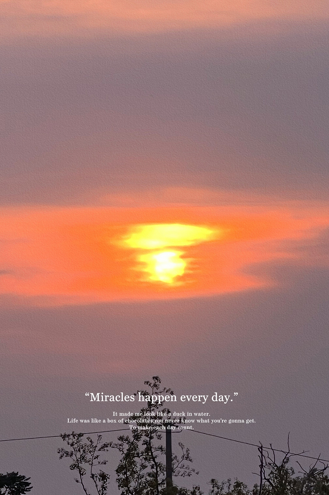
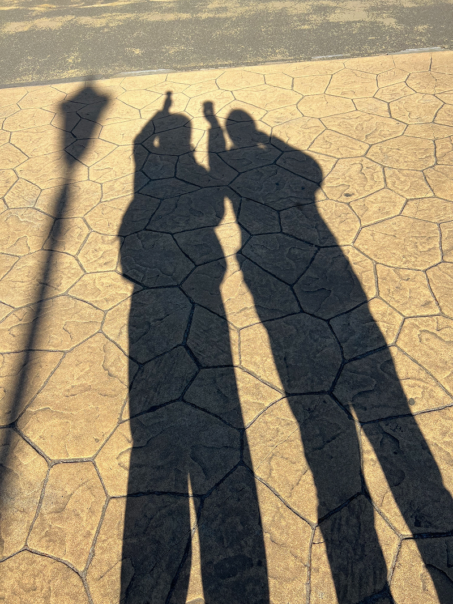

少しだけ人間らしい手触りを大切にしています。
何気ない日常の気づき。
そんな小さな感情のかけらを、

scroll
伝 わ る こ と を 、 何 よ り 大 切 に 。


デザインしたもの
これまで心を込めて制作してきた,大切な作品たちの記録です。



少しだけ人間らしい手触りを大切にしています。
何気ない日常の気づき。
そんな小さな感情のかけらを、
これまで心を込めて制作してきた,大切な作品たちの記録です。